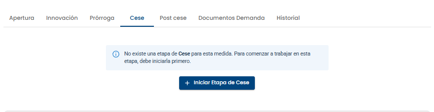
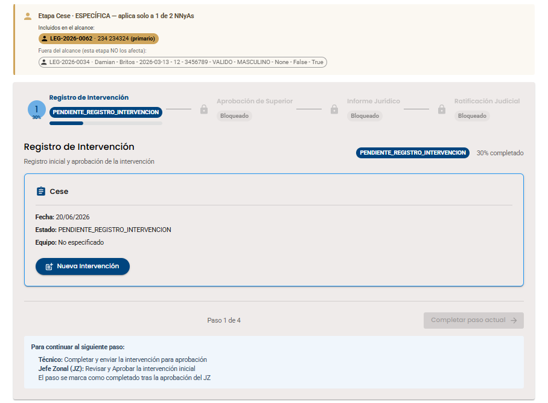
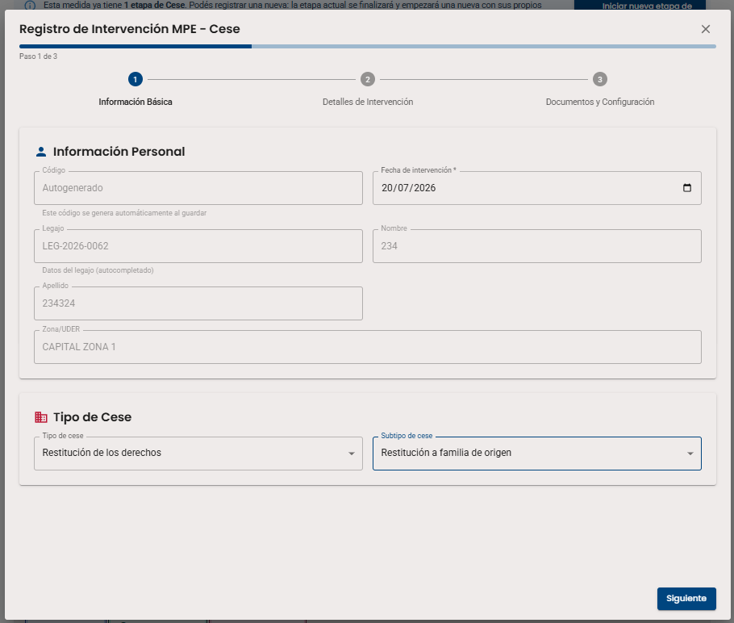
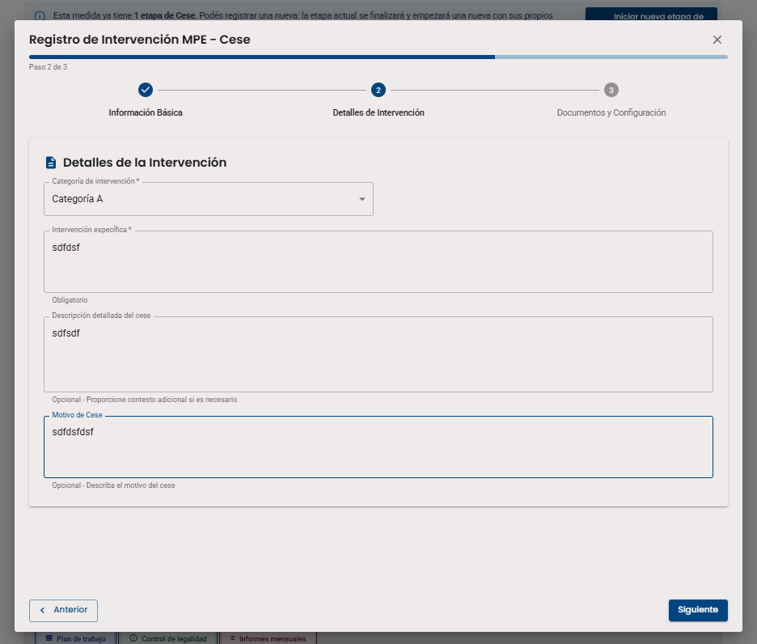
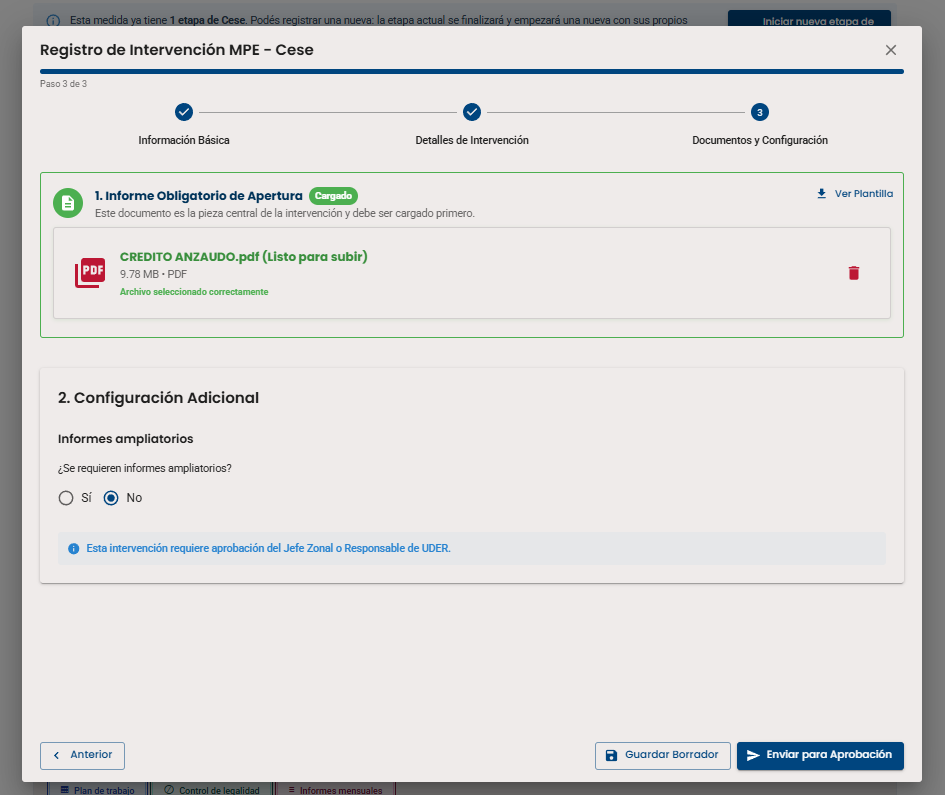
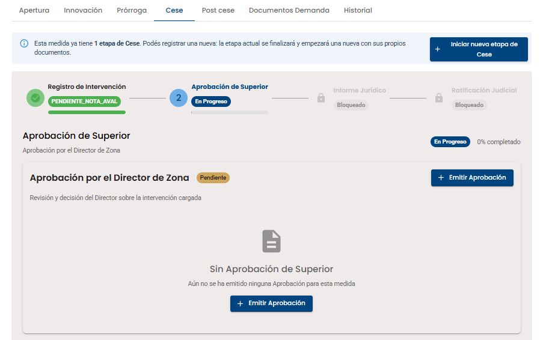
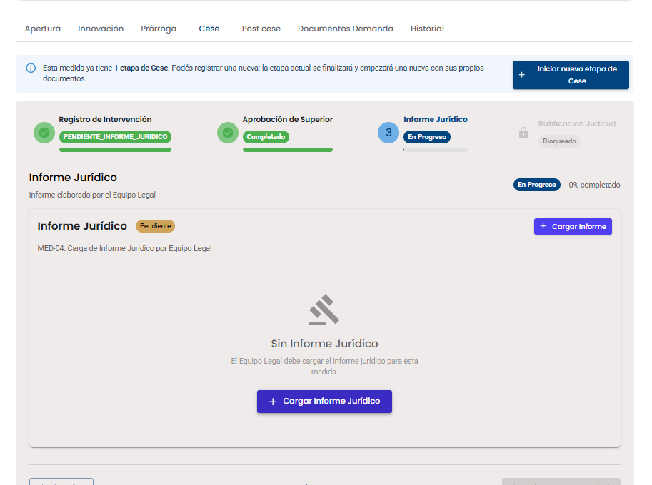

Etapa 10b de 13
❌ Cese de Medida de Protección Excepcional (MPE)
El cierre de una MPE requiere aprobaciones institucionales: Técnico (3 pasos) → Director de Zona (aprobación) → Equipo Legal (informe jurídico). Cuando Legales envía el Informe Jurídico, la medida cambia a estado "CERRADA".
Paso 1 de 7
Cese de MPE

1
Acceder a Pestaña "Cese"
En la ficha de la medida MPE, localizá la pestaña "Cese" en el menú superior. Inicialmente está vacía con el mensaje: "Esta medida ya tiene 1 etapa de Cese. Podés registrar una nueva"
Hacé clic en el botón "+ Iniciar nueva etapa de Cese" para comenzar el proceso.
Hacé clic en el botón "+ Iniciar nueva etapa de Cese" para comenzar el proceso.
📸 Captura: 0162-cese-mpe-etapa-cese-vacia.png

2
Sección "Registro de Intervención"
Aparece la sección "Registro de Intervención" con estado "PENDIENTE_APROBACION_REGISTRO" (30% completado).
Se muestra una subsección "Cese" con: - Fecha: 20/07/2026 - Estado: PENDIENTE_APROBACION_REGISTRO - Botones: "Ver y Aprobar Cese" y "Ver Informe Obligatorio (PDF)"
Hacé clic en "+ Nueva Intervención" para abrir el modal de 3 pasos.
Se muestra una subsección "Cese" con: - Fecha: 20/07/2026 - Estado: PENDIENTE_APROBACION_REGISTRO - Botones: "Ver y Aprobar Cese" y "Ver Informe Obligatorio (PDF)"
Hacé clic en "+ Nueva Intervención" para abrir el modal de 3 pasos.
📸 Captura: 0163-cese-mpe-registro-intervencion.png

3
Modal Paso 1/3: Información Personal + Tipo de Cese
Se abre el modal "Registro de Intervención MPE - Cese" con 3 pasos:
Paso 1: Información Básica - Código, Fecha, Legajo, Nombre, Apellido, Zona/UDER - Tipo de Cese (dropdown): Seleccionar opción - Subtipo de cese (dropdown): Opciones según el tipo seleccionado
Botón: "Siguiente"
Paso 1: Información Básica - Código, Fecha, Legajo, Nombre, Apellido, Zona/UDER - Tipo de Cese (dropdown): Seleccionar opción - Subtipo de cese (dropdown): Opciones según el tipo seleccionado
Botón: "Siguiente"
📸 Captura: 0164-cese-mpe-modal-paso1-tipo-cese.png

4
Modal Paso 2/3: Detalles de Intervención
Paso 2: Detalles de la Intervención
- Categoría de intervención (dropdown)
- Intervención específica (textarea)
- Descripción detallada del cese (textarea)
- Motivo de Cese (textarea)
Botones: "Anterior", "Siguiente"
Botones: "Anterior", "Siguiente"
📸 Captura: 0165-cese-mpe-modal-paso2-detalles.png

5
Modal Paso 3/3: Documentos y Envío para Aprobación
Paso 3: Documentos y Configuración
- 1. Informe Obligatorio de Apertura (Cargado)
- 2. Configuración Adicional - Informes ampliatorios (Sí/No)
- Estado actual - Muestra: "Enviado a Aprobación"
Botones: "Anterior", "Rechazar Intervención", "Aprobar Intervención"
Hacé clic en "Aprobar Intervención" para enviar la solicitud.
Botones: "Anterior", "Rechazar Intervención", "Aprobar Intervención"
Hacé clic en "Aprobar Intervención" para enviar la solicitud.
📸 Captura: 0166-cese-mpe-modal-paso3-documentos.png

6
Aprobación de Superior (Director de Zona)
Aparece la etapa "Aprobación de Superior" - En Progreso.
Descripción: "Aprobación por el Director de Zona"
Subsección: "Aprobación por el Director de Zona" - Pendiente - Mensaje: "Sin Aprobación de Superior" - "Aún no se ha emitido ninguna Aprobación para esta medida"
Botón: "+ Emitir Aprobación" para que el Director apruebe el cese.
Descripción: "Aprobación por el Director de Zona"
Subsección: "Aprobación por el Director de Zona" - Pendiente - Mensaje: "Sin Aprobación de Superior" - "Aún no se ha emitido ninguna Aprobación para esta medida"
Botón: "+ Emitir Aprobación" para que el Director apruebe el cese.
📸 Captura: 0167-cese-mpe-aprobacion-superior.png

7
Informe Jurídico (Equipo Legal) → MEDIDA CERRADA
Aparece la etapa "Informe Jurídico" - En Progreso.
Descripción: "Informe elaborado por el Equipo Legal"
Subsección: "Informe Jurídico" - Pendiente - Mensaje: "Sin Informe Jurídico" - "El Equipo Legal debe cargar el informe jurídico para esta medida"
Botón: "+ Cargar Informe Jurídico"
🔴 IMPORTANTE: Cuando Legales envía el Informe Jurídico, la Medida MPE cambia automáticamente a estado "CERRADA".
Descripción: "Informe elaborado por el Equipo Legal"
Subsección: "Informe Jurídico" - Pendiente - Mensaje: "Sin Informe Jurídico" - "El Equipo Legal debe cargar el informe jurídico para esta medida"
Botón: "+ Cargar Informe Jurídico"
🔴 IMPORTANTE: Cuando Legales envía el Informe Jurídico, la Medida MPE cambia automáticamente a estado "CERRADA".
📸 Captura: 0168-cese-mpe-informe-juridico.png

7
Finalización: Medida Cerrada
¡Cese completado! Una vez que Legales envía el Informe Jurídico, la Medida Excepcional cambia automáticamente a estado "CERRADA". Esto se refleja:
✓ En la tabla de "Registro de Medidas Tomadas" del legajo
✓ Estado: CERRADA (fondo gris)
✓ Duración: -1 días (indicando finalización)
Nota: La Ratificación Judicial es un paso adicional que puede estar Pendiente o Completado, pero la medida ya está CERRADA.
✓ En la tabla de "Registro de Medidas Tomadas" del legajo
✓ Estado: CERRADA (fondo gris)
✓ Duración: -1 días (indicando finalización)
Nota: La Ratificación Judicial es un paso adicional que puede estar Pendiente o Completado, pero la medida ya está CERRADA.
📸 Captura: 0162-cese-mpe-legajo-cerrada.png
✅ Circuito de cierre de MPE completado - Medida CERRADA.
🖐️ Practicá vos mismo/a
Simulá el proceso de Cese de MPE y el circuito de firmas. Completá la solicitud del técnico y aprueba como JZ, Director y Legales.
Circuito de Cese de MPE
📋 Registrar Informe de Cierre
0 / 20 caracteres
Checklist de la práctica
- Solicitud del Técnico enviada
- Aprobado por Jefatura de Zona
- Nota de Aval del Director subida
- Informe Jurídico cargado (Cerrada)